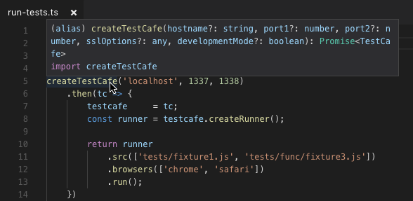

TestCafe v1.0.0 Released
TestCafe v1.0.0 is our first major update that includes features like video recording, configuration file, "live mode" for rapid test development and much more.
Breaking Changes #
TestCafe v1.0.0 introduces minor changes to the framework's behavior and programming interface. You can find the details in the migration guide.
Enhancements #
⚙ Video Recording (#2151) #
You can now record videos of test runs in Google Chrome and Mozilla Firefox. To enable video recording, install the FFmpeg library and then do one of the following:
specify the --video command line flag,
testcafe chrome test.js --video artifacts/videos/call the runner.video API method,
runner.video('artifacts/videos/');specify the videoPath configuration file property (configuration file is also a new feature, see below).
{ "videoPath": "artifacts/videos/" }
TestCafe records all tests and saves each recording in a separate file. You can change this behavior in video options. You can also customize video encoding parameters.
⚙ Configuration File (#3131) #
TestCafe now allows you to store its settings in the .testcaferc.json configuration file (with support for JSON5 syntax).
{
"browsers": "chrome",
"src": ["/home/user/auth-tests/fixture-1.js", "/home/user/mobile-tests/"],
"reporter": {
"name": "xunit",
"output": "reports/report.xml"
},
"screenshotPath": "/home/user/tests/screenshots/",
"takeScreenshotsOnFails": true,
"videoPath": "/home/user/tests/videos/",
"pageLoadTimeout": 1000,
"hostname": "host.mycorp.com"
// and more
}
Keep the configuration file in the project's root directory from which you run TestCafe.
Settings you specify when you launch tests from the command line and programming interfaces override settings from .testcaferc.json.
See Configuration File for more information.
⚙ Live Mode (#3215) #
We have integrated the testcafe-live module into our main code so you can now use the new live mode.
Live mode keeps the TestCafe process and browsers opened the whole time you are working on tests. Changes you make in code immediately restart the tests. That is, live mode allows you to see test results instantly. See How Live Mode Works.
Use the -L (--live) flag to enable live mode from the command line interface.
testcafe chrome tests/test.js -L
In the API, create a live mode runner with the testcafe.createLiveModeRunner function and use it instead of a regular test runner.
const createTestCafe = require('testcafe');
let testcafe = null;
createTestCafe('localhost', 1337, 1338)
.then(tc => {
testcafe = tc;
const liveRunner = testcafe.createLiveModeRunner();
return liveRunner
.src('tests/test.js')
.browsers('chrome')
.run();
})
.then(() => {
return testcafe.close();
});
⚙ Custom Reporter API Enhancements (Part of #2753; Pull Request) #
You can now access warnings that appeared during the test run from the reportTestDone method. To do this, use the testRunInfo object's
warningsproperty.async reportTestDone (name, testRunInfo, meta) { const warnings = testRunInfo.warnings; const hasWarnings = !!warnings.length; if(hasWarnings) { this.newline() .write('Warnings:'); warnings.forEach(warning => { this.newline() .write(warning); }); } }The reportTaskDone method now receives the result parameter that contains information about the number of passed, failed, and skipped tests.
async reportTaskDone (endTime, passed, warnings, result) { this.write(`Testing finished!`) .newline() .write(`Passed: ${result.passedCount}`) .newline() .write(`Failed: ${result.failedCount}`) .newline(); .write(`Skipped: ${result.skippedCount}`) .newline(); }
⚙ Typings for Programming Interface (#3341) by @infctr #
TestCafe programming interface now features TypeScript typings.

⚙ Programming Interface: Simpler API to Write Reports to a File #
You no longer need to use fs.createWriteStream to create a stream that writes a report to a file. You can now pass the file name as the runner.reporter parameter.
runnner.reporter('json', 'reports/report.json');
Bug Fixes #
- The test runner no longer hangs when a custom reporter implementation uses synchronous callbacks (#3209)
- Fixture hooks for two adjacent fixtures are now executed in the correct order (#3298)
- Iframes no longer throw an error after a
document.opencall in IE and Edge (#3343) - TestCafe no longer triggers a click event when you disable a button with a
spanelement inside (#2902) - Fixed a bug that led to errors in certain cases (#3189)
- We have improved the status panel design and adaptivity (#3073)
- Redirects through several pages in iframes now work correctly (testcafe-hammerhead/#1825)
- TestCafe can now correctly work with pages that override
HTMLElement.classListin IE11 (testcafe-hammerhead/#1890)